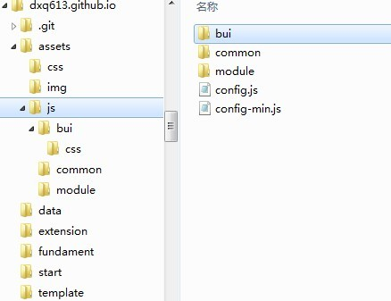

Hello BUI！

导引
欢迎使用BUI！在这一章节里，我们将学习以下内容:
- 如何加载BUI文件和开始使用BUI的一些基础功能
- BUI依赖的其他框架
- 如何去定义模块和加载模块
- 如何使用API以及对应的demo
- 在使用过程中遇到的问题如何去处理
- 难度：初学者
- 版本：1.0
如何开始
最简单的使用BUI的方式是直接引用CDN上的文件，这能节约很多部署文件带来的问题，不过这也要求，你必须能访问公共网络。
你只需要把你要运行的页面放到一个web server上，BUI框架没有什么安全上的限制，所以不需要服务器有特别的功能，不过如果能提供Combo功能更好，Combo功能在下面会介绍。
最简单的示例
上面的代码演示了如何使用BUI，你需要引入：
- BUI默认的CSS文件，如果你有自定义的样式可以不引入
- BUI依赖的类库，默认是JQuery,也可以更换为Kissy，参看详情
你可能需要处理使用https的资源，你可以直接将地址换成类似于：
https://s.tbcdn.cn/g/fi/bui/seed-min.js的地址
不使用loader
如果你对loader陌生，可以直接将整个BUI引入，但是我们不推荐这样做：
- 整个BUI文件很大，超过200k
- 有一些模块并未包含到打包好的文件中
- 未来不排除，在新的版本中去掉这种引入方式
<!DOCTYPE html>
<html>
<head>
<meta charset="utf-8">
<title>Tutorial: Hello BUI!</title>
<link href="https://s.tbcdn.cn/g/fi/bui/css/dpl-min.css" rel="stylesheet">
<link href="https://s.tbcdn.cn/g/fi/bui/css/bui-min.css" rel="stylesheet">
</head>
<body>
<h1 id="greeting">Hello</h1>
<!-- load BUI -->
<script src="https://s.tbcdn.cn/g/fi/bui/jquery-1.8.1.min.js"></script>
<script src="https://s.tbcdn.cn/g/fi/bui/bui-min.js?t=201212261326"></script>
<script>
BUI.Message.Alert('欢迎使用BUI'); //Message 属于Overlay模块，BUI.Message = BUI.Overlay.Message
//TO DO
</script>
</body>
</html>
以下几点：
- css文件放到
head标签中 - script文件作为
body的最后标签，防止JS阻塞DOM加载
更多的关于加载和配置BUI的内容请参看：BUI的加载和配置
模块规范
BUI的模块规范遵循CMD规范,加载默认方式使用seajs，可以去seajs的文档了解更多的信息。
作为BUI的开发者为了方便用户，我们在实现和加载层次上，屏蔽了底层loader的存在，您只需要按照BUI的写法既可以无障碍的使用loader。
定义模块
模块的定义遵循CMD规范，模块的名称一般使用"/"，例如
bui/list/simplelist,模块名称必须跟目录有对应关系，上面定义的模块的文件是bui/list/simplelist.js
这里有非常复杂的目录映射，不过日常使用中，使用最简单的方式：文件目录名跟模块名一致的规则即可。
示例如下：
//定义模块的函数，有3个变量，模块名称、依赖的模块和模块的主体函数
//模块名称和依赖的模块可以省略
define('newModuleName',['module1','module2'],function(require){
var Module1 = require('module1'); //根据模块名称获取模块
var NewModule = function(){ //定义模块
};
return NewModlue; //将定义的新模块返回，在其他模块中require('newModuleName')来使用
});
CMD的规范比这里的示例要复杂，但是仅仅使用BUI，了解示例的代码就足够了。如果想了解更多这方面的知识的话，可以去深入了解一下seajs。
模块加载
以下代码简单的展示加载BUI模块的方式：
默认的加载方式
BUI.use(id, callback)
<script src="https://s.tbcdn.cn/g/fi/bui/jquery-1.8.1.min.js"></script>
<script src="https://s.tbcdn.cn/g/fi/bui/seed-min.js?t=201212261326"></script>
<script type="text/javascript">
BUI.use('bui/list',function(List){
});
//一次加载多个模块
//bui/list 对应模块 List
//bui/data 对应模块 Data
BUI.use(['bui/list','bui/data'],function(List,Data){
});
</script>
加载多个模块时，当模块加载完毕后会调用指定的callback方法，其中回调方法的参数与加载的模块一一对应。如：加载['bui/list','bui/data']，其后的回调方法则需要定义两个参数function(List,Data)，则参数List所对应的是bui/list模块的对象，如此类推。
使用CDN
我们所有的示例中皆使用cdn上的JS文件，这意味着你可以直接复制代码粘贴到本地运行，而不需要修改任何路径，但这里有以下缺点：
- 开发方面，cdn上的文件都是经过build的，经过压缩和代码优化，这也意味着调试困难
- 这也要求你能说服你的客户，接受引用cdn上的文件，很多情况下，这很困难。
- 加载你自己的模块时，你需要额外配置自己的配置文件。
- 目前CDN上的代码更新比较频繁，因为BUI处于开发阶段必然会接受大量需求和反馈，为了能及时响应，所以不可避免的会偶尔的引入一些问题。
上面的所有问题都有对应的解决方案，可以查看以下章节加载文件，编译自己的模块来进一步了解。
假如你要部署自己的本地应用，你可以下载BUI的源码,同时部署到自己的web server上。你可以将自己的代码放在自己的目录下，如下图：

然后这样引用文件：
<!DOCTYPE html>
<html>
<head>
<meta charset="utf-8">
<title>Tutorial: Hello BUI!</title>
<link href="../assets/css/bui/css/dpl-min.css" rel="stylesheet">
<link href="../assets/css/bui/css/bui-min.css" rel="stylesheet">
</head>
<body>
<h1 id="greeting">Hello</h1>
<!-- load BUI -->
<script src="../assets/js/bui/jquery-1.8.1.min.js"></script>
<script src="../assets/js/bui/seed-min.js?t=201212261326"></script>
<script>
BUI.use('bui/list',function(List){
//TO DO
});
</script>
</body>
</html>
获取帮助
- 你可以去BUI网站查看更多的Demo
- 你可以去BUI论坛参与交流和探讨
- 你可以去BUI API查看控件的API以便更加了解BUI
- 你可以去issue列表里提交自己的问题和需求
- 你可以参加旺旺群：778141976，QQ群：138692365
下一步学习
开始使用BUI是非常简单的，只需要引入BUI所依赖的文件，和引入对应的模块即可。但是BUI有很多非常好的机制和功能，根据你的需要你可以按照不同的章节进行学习。
- 假如你使用过BUI，你想了解更多的BUI整体的设计和未来的方向，你可以去看一下BUI的现状章节
- 假如你想知道更多的加载BUI模块相关的信息，你可以去查看一下加载文件章节
- 假如你仅仅是被BUI的控件吸引，可以直接去BUI网站复制对应的Demo
- 假如你想了解BUI的控件结构，基于BUI进行新控件的开发和扩展，可以从类的创建和继承开始
BUI 刚刚起步，但是我们坚持的理念是：让您的工作更轻松，不让前端领域成为您项目的瓶颈，更希望您能参与到BUI的开发当中！